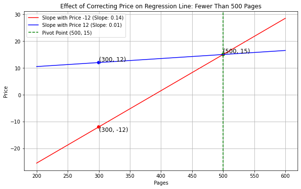

Below are practice problems tagged for Lecture 24
(rendered directly from the original exam/quiz sources).
Problem 1
Problem 1.1
Now, the Museum of Natural History wants to know how many visitors
they have in a year. However, their computer systems are rather archaic
and so they aren’t able to keep track of the number of tickets sold for
an entire year. Instead, they randomly select five days in the year, and
keep track of the number of visitors on those days. Let’s call these
numbers v_1, v_2, v_3,
v_4, and v_5.
Which of the following is the best estimate the number of visitors
for the entire year?
Our sample is the number of visitors on the five days, and our
population is the number of visitors in all 365 days.
First, we calculate the sample mean, the average number of visitors
in the 5 days, which is m =
\frac{1}{5}\cdot(v_1 + v_2 + v_3 + v_4 + v_5). We use this
statistic to estimate the population mean, the average number of
visitors in this year.
Then, we use the estimated population mean to calculate the estimated
pupulation sum, so we multiply the number of days in a year (365) with
the estimated population mean. We get 365 m =
\frac{365}{5}\cdot(v_1 + v_2 + v_3 + v_4 + v_5)
Difficulty: ⭐️
The average score on this problem was 92%.
Problem 1.2
Now we’re interested in predicting the admission cost of a museum
based on its number of visitors. Suppose:
admission cost and number of visitors are linearly associated
with a correlation coefficient of 0.25,
the number of visitors at the Museum of Natural History is six
standard deviations below average,
the average cost of museum admission is 15 dollars, and
the standard deviation of admission cost is 3 dollars.
What would the regression line predict for the admission cost (in
dollars) at the Museum of Natural History? Give your answer as a number
without any units, rounded to three decimal places.
Answer: 10.500
Recall, we can make predictions in standard units with the following
formula
\text{predicted}\ y_{su} = r \cdot
x_{su}
We’re given that the correlation coefficient, r, between visitors and admission cost is
0.25. Here, we’re using the number of visitors (x) to predict admission cost (y). Given that the number of visitors at the
Museum of Natural History is 6 standard deviations
below average,
We then compute y, which is the admission cost (in dollars) at the
Museum of Natural History.
\begin{align*} y_{su} &= \frac{y-
\text{Mean of } y}{\text{SD of } y}\\
-1.5 &= \frac{y-15}{3} \\
-1.5 \cdot 3 &= y-15\\
-4.5 + 15 &= y\\
y &= \boxed{10.5}
\end{align*}
So, the regression line predicts that the admission cost at the
Museum of Natural History is $10.50.
Difficulty: ⭐️⭐️⭐️
The average score on this problem was 62%.
Source: fa22-final — Q6
Problem 2
In this question, we’ll explore the relationship between the ages and
incomes of credit card applicants.
Problem 2.1
The credit card company that owns the data in apps,
BruinCard, has decided not to give us access to the entire
apps DataFrame, but instead just a sample of
apps called small_apps. We’ll start by using
the information in small_apps to compute the regression
line that predicts the age of an applicant given their income.
For an applicant with an income that is \frac{8}{3} standard deviations above the
mean income, we predict their age to be \frac{4}{5} standard deviations above the
mean age. What is the correlation coefficient, r, between incomes and ages in
small_apps? Give your answer as a fully simplified
fraction.
Answer:r =
\frac{3}{10}
To find the correlation coefficient r we use the equation of the regression line
in standard units and solve for r as
follows.
\begin{align*}
\text{predicted } y_{\text{(su)}} &= r \cdot x_{\text{(su)}} \\
\frac{4}{5} &= r \cdot \frac{8}{3} \\
r &= \frac{4}{5} \cdot \frac{3}{8} \\
r &= \frac{3}{10}
\end{align*}
Difficulty: ⭐️⭐️⭐️
The average score on this problem was 52%.
Problem 2.2
Now, we want to predict the income of an applicant given their age.
We will again use the information in small_apps to find the
regression line. The regression line predicts that an applicant whose
age is \frac{4}{5} standard deviations
above the mean age has an income that is s standard deviations above the mean income.
What is the value of s? Give your
answer as a fully simplified fraction.
Answer:s =
\frac{6}{25}
We again use the equation of the regression line in standard units,
with the value of r we found in the
previous part.
\begin{align*}
\text{predicted } y_{\text{(su)}} &= r \cdot x_{\text{(su)}} \\
s &= \frac{3}{10} \cdot \frac{4}{5} \\
s &= \frac{6}{25}
\end{align*}
Notice that when we predict income based on age, our predictions are
different than when we predict age based on income. That is, the answer
to this question is not\frac{8}{3}. We can think of this phenomenon
as a consequence of regression to the mean which means that the
predicted variable is always closer to average than the original
variable. In part (a), we start with an income of \frac{8}{3} standard units and predict an age
of \frac{4}{5} standard units, which is
closer to average than \frac{8}{3}
standard units. Then in part (b), we start with an age of \frac{4}{5} and predict an income of \frac{6}{25} standard units, which is closer
to average than \frac{4}{5} standard
units. This happens because whenever we make a prediction, we multiply
by r which is less than one in
magnitude.
Difficulty: ⭐️⭐️⭐️⭐️⭐️
The average score on this problem was 21%.
Problem 2.3
BruinCard has now taken away our access to both apps and
small_apps, and has instead given us access to an even
smaller sample of apps called mini_apps. In
mini_apps, we know the following information:
All incomes and ages are positive numbers.
There is a positive linear association between incomes and
ages.
We use the data in mini_apps to find the regression line
that will allow us to predict the income of an applicant given their
age. Just to test the limits of this regression line, we use it to
predict the income of an applicant who is -2 years old,
even though it doesn’t make sense for a person to have a negative
age.
Let I be the regression line’s
prediction of this applicant’s income. Which of the following
inequalities are guaranteed to be satisfied? Select all that apply.
\dfrac{| I - \text{mean
income}|}{\text{standard deviation of incomes}} \leq \dfrac{| \text{mean
age} + 2 |}{\text{standard deviation of ages}}
None of the above.
Answer:I < \text{mean
income}, \dfrac{| I - \text{mean
income}|}{\text{standard deviation of incomes}} \leq \dfrac{| \text{mean
age} + 2 |}{\text{standard deviation of ages}}
To understand this answer, we will investigate each option.
I < 0:
This option asks whether income is guaranteed to be negative. This is
not necessarily true. For example, it’s possible that the slope of the
regression line is 2 and the intercept
is 10, in which case the income
associated with a -2 year old would be
6, which is positive.
I < \text{mean income}:
This option asks whether the predicted income is guaranteed to be
lower than the mean income. It helps to think in standard units. In
standard units, the regression line goes through the point (0, 0) and has slope r, which we are told is positive. This means
that for a below-average x, the
predicted y is also below average. So
this statement must be true.
First, notice that | \text{mean age} + 2 |
= | -2 - \text{mean age}|, which represents the horizontal
distance betweeen these two points on the regression line: (\text{mean age}, \text{mean income}), (-2, I). Likewise, | I - \text{mean income}| represents the
vertical distance between those same two points. So the inequality can
be interpreted as a question of whether the rise of the
regression line is less than or equal to the run, or whether
the slope is at most 1. That’s not guaranteed when we’re working in
original units, as we are here, so this option is not necessarily
true.
\dfrac{| I - \text{mean
income}|}{\text{standard deviation of incomes}} \leq \dfrac{| \text{mean
age} + 2 |}{\text{standard deviation of ages}}:
Since standard deviation cannot be negative, we have \dfrac{| I - \text{mean income}|}{\text{standard
deviation of incomes}} = \left| \dfrac{I - \text{mean
income}}{\text{standard deviation of incomes}} \right| =
I_{\text{(su)}}. Similarly, \dfrac{|\text{mean age} + 2|}{\text{standard
deviation of ages}} = \left| \dfrac{-2 - \text{mean age}}{\text{standard
deviation of ages}} \right| = -2_{\text{(su)}}. So this option is
asking about whether the predicted income, in standard units, is
guaranteed to be less (in absolute value) than the age. Since we make
predictions in standard units using the equation of the regression line
\text{predicted } y_{\text{(su)}} = r \cdot
x_{\text{(su)}} and we know |r|\leq
1, this means |\text{predicted }
y_{\text{(su)}}| \leq | x_{\text{(su)}}|. Applying this to ages
(x) and incomes (y), this says exactly what the given
inequality says. This is the phenomenon we call regression to the
mean.
Difficulty: ⭐️⭐️⭐️
The average score on this problem was 69%.
Problem 2.4
Yet again, BruinCard, the company that gave us access to
apps, small_apps, and mini_apps,
has revoked our access to those three DataFrames and instead has given
us micro_apps, an even smaller sample of
apps.
Using micro_apps, we are again interested in finding the
regression line that will allow us to predict the income of an applicant
given their age. We are given the following information:
The correlation coefficient, r,
between ages and incomes is -\frac{1}{3} (note the negative sign).
The mean income is \frac{7}{2}
(remember, incomes are measured in tens of thousands of dollars).
The mean age is 33.
The regression line predicts that a 24 year old applicant has an
income of \frac{31}{2}.
Suppose the standard deviation of incomes in micro_apps
is an integer multiple of the standard deviation of ages in
micro_apps. That is,
\text{standard deviation of income} = k
\cdot \text{standard deviation of age}.
What is the value of k? Give your
answer as an integer.
Answer:k = 4
To find this answer, we’ll use the definition of the regression line
in original units, which is \text{predicted }
y = mx+b, where m = r \cdot
\frac{\text{SD of } y}{\text{SD of }x}, \: \: b = \text{mean of } y - m
\cdot \text{mean of } x
Next we substitute these value for m
and b into \text{predicted } y = mx + b, interpret x as age and y as income, and use the given information to
find k.
\begin{align*}
\text{predicted } y &= mx+b \\
\text{predicted } y &= r \cdot \frac{\text{SD of } y}{\text{SD of
}x} \cdot x+ \text{mean of } y - r \cdot \frac{\text{SD of } y}{\text{SD
of }x} \cdot \text{mean of } x\\
\text{predicted income}&= r \cdot \frac{\text{SD of
income}}{\text{SD of age}} \cdot \text{age}+ \text{mean income} - r
\cdot \frac{\text{SD of income}}{\text{SD of age}} \cdot \text{mean age}
\\
\frac{31}{2}&= -\frac{1}{3} \cdot k \cdot 24+ \frac{7}{2} +
\frac{1}{3} \cdot k \cdot 33 \\
\frac{31}{2}&= -8k+ \frac{7}{2} + 11k \\
\frac{31}{2}&= 3k+ \frac{7}{2} \\
3k &= \frac{31}{2} - \frac{7}{2} \\
3k &= 12 \\
k &= 4
\end{align*}
Another way to solve this problem uses the equation of the regression
line in standard units and the definition of standard units.
\begin{align*}
\text{predicted } y_{\text{(su)}} &= r \cdot x_{\text{(su)}} \\
\frac{\text{predicted income} - \text{mean income}}{\text{SD of income}}
&= r \cdot \frac{\text{age} - \text{mean age}}{\text{SD of age}} \\
\frac{\frac{31}{2} - \frac{7}{2}}{k\cdot \text{SD of age}} &=
-\frac{1}{3} \cdot \frac{24 - 33}{\text{SD of age}} \\
\frac{12}{k\cdot \text{SD of age}} &= -\frac{1}{3} \cdot
\frac{-9}{\text{SD of age}} \\
\frac{12}{k\cdot \text{SD of age}} &= \frac{3}{\text{SD of age}} \\
\frac{k\cdot \text{SD of age}}{\text{SD of age}} &= \frac{12}{3}\\
k &= 4
\end{align*}
Difficulty: ⭐️⭐️⭐️⭐️
The average score on this problem was 45%.
Source: fa24-final — Q11
Problem 3
Dhruv works at the bookstore, and his job involves pricing new books
that come in from the supplier. He prices new books based on the number
of pages they have. He does this using linear regression, which he
learned about in DSC 10.
To build his regression line, Dhruv gathers the following information
about the distinct books currently available at the bookstore:
The correlation between price and number of pages is 0.6.
The mean price of all books is $15, with a standard deviation of
$4.
The mean number of pages of all books is 500, with a standard
deviation of 200.
Problem 3.1
Which of the following statements about Dhruv’s regression line are
true? Select all that apply.
It goes through the point (500,
15).
It goes through the point (200,
4).
Its slope is equal to 0.6.
Its y-intercept is equal to 9.
Its root mean square error is larger than the root mean square error
of any other line.
All the books currently available at the bookstore fall on the
line.
Answer: a, d
When performing linear regression analysis, the slope
(m) and intercept (b) of the regression line
can be calculated as follows:
m = r \cdot \frac{\text{SD of }
y}{\text{SD of } x} = 0.6 \times \left(\frac{4}{200}\right) = 0.012
b = (\text{mean of } y) - m \cdot
(\text{mean of } x) = 15 - 0.012 \times 500 = 9
To predict the dependent variable (y_i) based on the independent variable (x_i):
\text{predicted } y_i = 0.012 \cdot x_i + 9
True. The regression line will always pass
through the point (\bar{x}, \bar{y}) due to the way we calculate it,
which is (500, 15) in this
case.
False. As calculated, the slope of the
regression line is 0.012, not 0.6. The correlation coefficient is not the
slope.
True. The intercept, based on the mean values
and the calculated slope, is 9.
False. The least squares regression line
minimizes the root mean square error (RMSE) compared to any other
possible regression lines.
False. Regression provides a prediction or
estimation, not an exact accounting. Not all books will fall exactly on
the regression line due to the inherent variability and other
influencing factors not accounted for in the simple linear
model.
Difficulty: ⭐️⭐️
The average score on this problem was 80%.
Problem 3.2
If "The Martian" has 30
more pages than "The Simple Wild", and both books are
priced according to the regression line, how much more does
"The Martian" cost than "The Simple Wild"?
Give your answer as a number, in dollars and cents.
Answer: 0.36
Given the regression equation(calculated in previous question): \text{predicted } y_i = 0.012 \cdot x_i + 9
Assume:
x_i for “The Simple Wild” is
x.
x_j for “The Martian” is x + 30.
Predicted price for “The Simple Wild” (y_i): y_i = 0.012
\cdot x + 9
Predicted price for “The Martian” (y_j): y_j = 0.012
\cdot (x + 30) + 9 y_j = 0.012 \cdot
x + 0.36 + 9 y_j = 0.012 \cdot x +
9.36
The price of “The Martian” minus the price of “The Simple Wild”:
y_j - y_i = (0.012 \cdot x + 9.36) - (0.012
\cdot x + 9) = 9.36 - 9 = 0.36
Difficulty: ⭐️⭐️⭐️⭐️
The average score on this problem was 39%.
Problem 3.3
A new book added to the inventory is "The Goldfinch",
which has 700 pages. How much should
Dhruv charge customers for this book, according to the regression line
pricing model? Give your answer as a number, in dollars and cents.
Answer: 17.4
Given the regression equation(calculated in (a)): \text{predicted } y_i = 0.012 \cdot x_i + 9
“The Goldfinch” has 700 pages. Substitute into the regression
equation: y_i = 0.012 \cdot 700 + 9 = 8.4 +
9 = 17.4
Difficulty: ⭐️⭐️⭐️
The average score on this problem was 51%.
Problem 3.4
It turns out that Dhruv had an error in his regression line because
he had accidentally recorded the price of one book in the data set,
"Roadside Picnic", as -\$12 instead of \$12. He builds a new regression line using
the correct price for "Roadside Picnic" and he finds that
his new regression line has a smaller slope than before. What can we
conclude about the number of pages in "Roadside Picnic"
based on this information alone?
"Roadside Picnic" has fewer than 500 pages.
"Roadside Picnic" has exactly 500 pages.
"Roadside Picnic" has more than 500 pages.
Not enough information.
Answer: "Roadside Picnic" has fewer
than 500 pages.
The linear regression line has to pass through the point (500,
15).
Fewer Than 500 Pages: If “Roadside Picnic” has fewer than 500
pages, then this point is toward the left side of the pivot point of the
regression line, and price -12 will drag the line down(towards the lower
left corner) more than 12 does, so the slope will decrease if price
changes from -12 to 12.
Plot for your reference:

Exactly 500 Pages: If the book has exactly 500 pages, which is
the mean or center of the data distribution, the incorrect price would
mainly influence the intercept rather than the slope. Correcting the
price would adjust the intercept but have a lesser effect on the
slope.
More Than 500 Pages: If “Roadside Picnic” has more than 500
pages, then it’s toward the right side of the regression line, and price
-12 will drag the line down(towards the lower right corner) more than 12
does, so correcting this error would increase the slope.
Plot for your reference:
Difficulty: ⭐️⭐️⭐️⭐️
The average score on this problem was 49%.
Problem 3.5
Suppose that Dhruv originally based his regression line on a data set
which has a single row for each unique book sold at Bill’s Book Bonanza.
If instead, he had used a dataset with one row for each copy of a book
at the bookstore (and there are multiple copies of some books), would
his regression line have come out the same?
Yes
No
Answer: No
The regression line would not be the same due to the change in data
and the resulting impact on mean and standard deviation of the price and
pages.
Difficulty: ⭐️⭐️⭐️
The average score on this problem was 65%.
Problem 3.6
Suppose Dhruv bootstraps his scatterplot 10,000 times and calculates
a regression line for each resample. It turns out that 95\% of his bootstrapped slopes fall in the
interval [a, b] and 95\% of his bootstrapped intercepts fall in
the interval [c, d]. Does this mean
that 95\% of his predicted prices for a
book with 500 pages fall in the interval [500a+c, 500b+d]?
Yes
No
Answer: No
95% of bootstrapped slopes and intercepts fall within specific
intervals does not imply that 95% of predicted prices for a book with
500 pages will also fall within the interval [500a + c, 500b + d].
Because the intervals for slopes and intercepts are calculated
independently, their combination does not account for the covariance
between these regression parameters or the error variance around
predictions. Additionally, combining slope and intercept independently
can result in regression lines that do not pass through the pivotal
point (mean(X), mean(Y)), making them unreliable for accurate
prediction.
Difficulty: ⭐️⭐️⭐️
The average score on this problem was 55%.
Problem 4
Laura built the LAPPLAND TV storage unit in 2 hours and 30 minutes,
and she thinks she worked at an average speed. If you want to see
whether the average time to build the TV storage unit is indeed 2 hours
and 30 minutes using the sample of assembly times in
app_data, which of the following tools
could you use to help you? Select all that apply.
hypothesis testing
permutation testing
bootstrapping
Central Limit Theorem
confidence interval
regression
Answer: hypothesis testing, bootstrapping, Central
Limit Theorem, confidence interval
The average time to build the LAPPLAND TV storage unit is an unknown
population parameter. We’re trying to figure out if this parameter could
be equal to the specific value of 2 hours and 30 minutes. We can use the
framework we learned in class to set this up as a hypothesis test via
confidence interval. When we have a null hypothesis of the form “the
parameter equals the specific value” and an alternative hypothesis of
“it does not,” this framework applies, and conducting the hypothesis
test is equivalent to constructing a confidence interval for the
parameter and seeing if the specific value falls in the interval.
There are two ways in which we could construct the confidence
interval. One is through bootstrapping, and the other is through the
Central Limit Theorem, which applies in this case because our statistic
is the mean.
The only listed tools that could not be used here are permutation
testing and regression. Permutation testing is used to determine whether
two samples could have come from the same population, but here we only
have one sample. Permutation testing would be helpful to answer a
question like, “Does it take the same amount of time to assemble the
LAPPLAND TV storage as it does to assemble the HAUGA TV storage
unit?”
Regression is used to predict one numerical quantity based on
another, not to estimate a parameter as we are doing here. Regression
would be appropriate to answer a question like, “How does the assembly
time for the LAPPLAND TV storage unit change with the assembler’s
age?”
Difficulty: ⭐️⭐️
The average score on this problem was 78%.
Problem 5
Raine is helping settle a debate between two friends on the
“superior" season — winter or summer. In doing so, they try to
understand the relationship between the number of sunshine hours per
month in January and the number of sunshine hours per month in July
across all cities in California in sun.
Raine finds the regression line that predicts the number of sunshine
hours in July (y) for a city given its
number of sunshine hours in January (x). In doing so, they find that the
correlation between the two variables is \frac{2}{5}.
Problem 5.1
Which of these could be a scatter plot of number of sunshine hours in
July vs. number of sunshine hours in January?
Option 1
Option 2
Option 3
Option 4
Answer: Option 1
Since r = \frac{2}{5}, the correct
option must be a scatter plot with a mild positive (up and to the right)
linear association. Option 3 can be ruled out immediately, since the
linear association in it is negative (down and to the right). Option 2’s
linear association is too strong for r =
\frac{2}{5}, and Option 4’s linear association is too weak for
r = \frac{2}{5}, which leaves Option
1.
Difficulty: ⭐️⭐️⭐️
The average score on this problem was 57%.
Problem 5.2
Suppose the standard deviation of the number of sunshine hours in
January for cities in California is equal to the standard deviation of
the number of sunshine hours in July for cities in California.
Raine’s hometown of Santa Clarita saw 60 more sunshine hours in
January than the average California city did. How many more
sunshine hours than average does the regression line predict
that Santa Clarita will have in July? Give your answer as a positive
integer. (Hint: You’ll need to use the fact that the correlation
between the two variables is \frac{2}{5}.)
Answer: 24
At a high level, we’ll start with the formula for the regression line
in standard units, and re-write it in a form that will allow us to use
the information provided to us in the question.
Recall, the regression line in standard units is
\text{predicted }y_{\text{(su)}} = r \cdot
x_{\text{(su)}}
Using the definitions of \text{predicted
}y_{\text{(su)}} and x_{\text{(su)}} gives us
\frac{\text{predicted } y - \text{mean of
}y}{\text{SD of }y} = r \cdot \frac{x - \text{mean of }x}{\text{SD of
}x}
Here, the x variable is sunshine
hours in January and the y variable is
sunshine hours in July. Given that the standard deviation of January and
July sunshine hours are equal, we can simplifies our formula to
\text{predicted } y - \text{mean of }y = r
\cdot (x - \text{mean of }x)
Since we’re asked how much more sunshine Santa Clarita will have in
July compared to the average, we’re interested in the difference y - \text{mean of} y. We were given that
Santa Clarita had 60 more sunshine hours in January than the average,
and that the correlation between the two variables(correlation
coefficient) is \frac{2}{5}. In terms
of the variables above, then, we know:
x - \text{mean of }x =
60.
r = \frac{2}{5}.
Then,
\text{predicted } y - \text{mean of }y = r
\cdot (x - \text{mean of }x) = \frac{2}{5} \cdot 60 = 24
Therefore, the regression line predicts that Santa Clarita will have
24 more sunshine hours than the average California city in July.
Difficulty: ⭐️⭐️⭐️
The average score on this problem was 68%.
As we know, San Diego was particularly cloudy this May. More
generally, Anthony, another California native, feels that California is
getting cloudier and cloudier overall.
To imagine what the dataset may look like in a few years, Anthony
subtracts 5 from the number of sunshine hours in both January and July
for all California cities in the dataset – i.e., he subtracts 5 from
each x value and 5 from each y value in the dataset. He then creates a
regression line to use the new xs to
predict the new ys.
Problem 5.3
What is the slope of Anthony’s new regression line?
Answer: \frac{2}{5}
To determine the slope of Anthony’s new regression line, we need to
understand how the modifications he made to the dataset (subtracting 5
hours from each x and y value) affect the slope. In simple linear
regression, the slope of the regression line (m in y = mx +
b) is calculated using the formula:
m = r \cdot \frac{\text{SD of y}}{\text{SD
of x}}
r, the correlation coefficient
between the two variables, remains unchanged in Anthony’s modifications.
Remember, the correlation coefficient is the mean of the product of the
x values and y values when both are measured in standard
units; by subtracting the same constant amount from each x value, we aren’t changing what the x values convert to in standard units. If
you’re not convinced, convert the following two arrays in Python to
standard units; you’ll see that the results are the same.
x1 = np.array([5, 8, 4, 2, 9])x2 = x1 -5
Furthermore, Anthony’s modifications also don’t change the standard
deviations of the x values or y values, since the xs and ys
aren’t any more or less spread out after being shifted “down” by 5. So,
since r, \text{SD of }y, and \text{SD of }x are all unchanged, the slope
of the new regression line is the same as the slope of the old
regression line, pre-modification!
Given the fact that the correlation coefficient is \frac{2}{5} and the standard deviation of
sunshine hours in January (\text{SD of
}x) is equal to the standard deviation of sunshine hours in July
(\text{SD of }y), we have
m = r \cdot \frac{\text{SD of }y}{\text{SD
of }x} = \frac{2}{5} \cdot 1 = \frac{2}{5}
Difficulty: ⭐️⭐️⭐️
The average score on this problem was 73%.
Problem 5.4
Suppose the intercept of Raine’s original regression line – that is,
before Anthony subtracted 5 from each x
and each y – was 10. What is the
intercept of Anthony’s new regression line?
-7
-5
-3
0
3
5
7
Answer: 7
Let’s denote the original intercept as b and the new intercept in the new dataset as
b'. The equation for the original
regression line is y = mx + b,
where:
y is a predicted number of sunshine
hours in July, before 5 was subtracted from each number of hours.
m is the slope of the line, which
we know is \frac{2}{5} from the
previous part.
x is a number of sunshine hours in
January, before 5 was subtracted from each number of hours.
b is the original intercept. This
is 10.
When Anthony subtracts 5 from each x
and y value, the new regression line
becomes y - 5 = m \cdot (x - 5) +
b'
Expanding and rearrange this equation, we have
y = mx - 5m + 5 + b'
Remember, x and y here represent the number of sunshine hours
in January and July, respectively, before Anthony subtracted 5
from each number of hours. This means that the equation for y above is equivalent to y = mx + b. Comparing, we see that
-5m + 5 + b' = b
Since m = \frac{2}{5} (from the
previous part) and b = 10, we have
-5 \cdot \frac{2}{5} + 5 + b' = 10
\implies b' = 10 - 5 + 2 = 7
Therefore, the intercept of Anthony’s new regression line is 7.
Difficulty: ⭐️⭐️⭐️⭐️
The average score on this problem was 34%.
Source: sp23-final — Q11
Problem 6
Raine is helping settle a debate between two friends on the
“superior" season — winter or summer. In doing so, they try to
understand the relationship between the number of sunshine hours per
month in January and the number of sunshine hours per month in July
across all cities in California in sun.
Raine finds the regression line that predicts the number of sunshine
hours in July (y) for a city given its
number of sunshine hours in January (x). In doing so, they find that the
correlation between the two variables is \frac{2}{5}.
Problem 6.1
Which of these could be a scatter plot of number of sunshine hours in
July vs. number of sunshine hours in January?
Option 1
Option 2
Option 3
Option 4
Answer: Option 1
Since r = \frac{2}{5}, the correct
option must be a scatter plot with a mild positive (up and to the right)
linear association. Option 3 can be ruled out immediately, since the
linear association in it is negative (down and to the right). Option 2’s
linear association is too strong for r =
\frac{2}{5}, and Option 4’s linear association is too weak for
r = \frac{2}{5}, which leaves Option
1.
Difficulty: ⭐️⭐️⭐️
The average score on this problem was 57%.
Problem 6.2
Suppose the standard deviation of the number of sunshine hours in
January for cities in California is equal to the standard deviation of
the number of sunshine hours in July for cities in California.
Raine’s hometown of Santa Clarita saw 60 more sunshine hours in
January than the average California city did. How many more
sunshine hours than average does the regression line predict
that Santa Clarita will have in July? Give your answer as a positive
integer. (Hint: You’ll need to use the fact that the correlation
between the two variables is \frac{2}{5}.)
Answer: 24
At a high level, we’ll start with the formula for the regression line
in standard units, and re-write it in a form that will allow us to use
the information provided to us in the question.
Recall, the regression line in standard units is
\text{predicted }y_{\text{(su)}} = r \cdot
x_{\text{(su)}}
Using the definitions of \text{predicted
}y_{\text{(su)}} and x_{\text{(su)}} gives us
\frac{\text{predicted } y - \text{mean of
}y}{\text{SD of }y} = r \cdot \frac{x - \text{mean of }x}{\text{SD of
}x}
Here, the x variable is sunshine
hours in January and the y variable is
sunshine hours in July. Given that the standard deviation of January and
July sunshine hours are equal, we can simplifies our formula to
\text{predicted } y - \text{mean of }y = r
\cdot (x - \text{mean of }x)
Since we’re asked how much more sunshine Santa Clarita will have in
July compared to the average, we’re interested in the difference y - \text{mean of} y. We were given that
Santa Clarita had 60 more sunshine hours in January than the average,
and that the correlation between the two variables(correlation
coefficient) is \frac{2}{5}. In terms
of the variables above, then, we know:
x - \text{mean of }x =
60.
r = \frac{2}{5}.
Then,
\text{predicted } y - \text{mean of }y = r
\cdot (x - \text{mean of }x) = \frac{2}{5} \cdot 60 = 24
Therefore, the regression line predicts that Santa Clarita will have
24 more sunshine hours than the average California city in July.
Difficulty: ⭐️⭐️⭐️
The average score on this problem was 68%.
As we know, San Diego was particularly cloudy this May. More
generally, Anthony, another California native, feels that California is
getting cloudier and cloudier overall.
To imagine what the dataset may look like in a few years, Anthony
subtracts 5 from the number of sunshine hours in both January and July
for all California cities in the dataset – i.e., he subtracts 5 from
each x value and 5 from each y value in the dataset. He then creates a
regression line to use the new xs to
predict the new ys.
Problem 6.3
What is the slope of Anthony’s new regression line?
Answer: \frac{2}{5}
To determine the slope of Anthony’s new regression line, we need to
understand how the modifications he made to the dataset (subtracting 5
hours from each x and y value) affect the slope. In simple linear
regression, the slope of the regression line (m in y = mx +
b) is calculated using the formula:
m = r \cdot \frac{\text{SD of y}}{\text{SD
of x}}
r, the correlation coefficient
between the two variables, remains unchanged in Anthony’s modifications.
Remember, the correlation coefficient is the mean of the product of the
x values and y values when both are measured in standard
units; by subtracting the same constant amount from each x value, we aren’t changing what the x values convert to in standard units. If
you’re not convinced, convert the following two arrays in Python to
standard units; you’ll see that the results are the same.
x1 = np.array([5, 8, 4, 2, 9])x2 = x1 -5
Furthermore, Anthony’s modifications also don’t change the standard
deviations of the x values or y values, since the xs and ys
aren’t any more or less spread out after being shifted “down” by 5. So,
since r, \text{SD of }y, and \text{SD of }x are all unchanged, the slope
of the new regression line is the same as the slope of the old
regression line, pre-modification!
Given the fact that the correlation coefficient is \frac{2}{5} and the standard deviation of
sunshine hours in January (\text{SD of
}x) is equal to the standard deviation of sunshine hours in July
(\text{SD of }y), we have
m = r \cdot \frac{\text{SD of }y}{\text{SD
of }x} = \frac{2}{5} \cdot 1 = \frac{2}{5}
Difficulty: ⭐️⭐️⭐️
The average score on this problem was 73%.
Problem 6.4
Suppose the intercept of Raine’s original regression line – that is,
before Anthony subtracted 5 from each x
and each y – was 10. What is the
intercept of Anthony’s new regression line?
-7
-5
-3
0
3
5
7
Answer: 7
Let’s denote the original intercept as b and the new intercept in the new dataset as
b'. The equation for the original
regression line is y = mx + b,
where:
y is a predicted number of sunshine
hours in July, before 5 was subtracted from each number of hours.
m is the slope of the line, which
we know is \frac{2}{5} from the
previous part.
x is a number of sunshine hours in
January, before 5 was subtracted from each number of hours.
b is the original intercept. This
is 10.
When Anthony subtracts 5 from each x
and y value, the new regression line
becomes y - 5 = m \cdot (x - 5) +
b'
Expanding and rearrange this equation, we have
y = mx - 5m + 5 + b'
Remember, x and y here represent the number of sunshine hours
in January and July, respectively, before Anthony subtracted 5
from each number of hours. This means that the equation for y above is equivalent to y = mx + b. Comparing, we see that
-5m + 5 + b' = b
Since m = \frac{2}{5} (from the
previous part) and b = 10, we have
-5 \cdot \frac{2}{5} + 5 + b' = 10
\implies b' = 10 - 5 + 2 = 7
Therefore, the intercept of Anthony’s new regression line is 7.
Difficulty: ⭐️⭐️⭐️⭐️
The average score on this problem was 34%.
Jasmine is trying to get as far away from Anthony as possible and has
a trip to Chicago planned after finals. Chicago is known for being very
warm and sunny in the summer but cold, rainy, and snowy in the winter.
She decides to build a regression line that uses month of the year
(where 1 is January, 2 is February, 12 is December, etc.) to predict the
number of sunshine hours in Chicago.
Problem 6.5
What would you expect to see in a residual plot of Jasmine’s
regression line?
A patternless cloud of points
A distinctive pattern in the residual plot
Heteroscedasticity (residuals that are not evenly vertically
spread)
Answer: A distinctive pattern in the residual
plot
We’re told in the problem that the number of sunshine hours per month
in Chicago increases from the winter (January) to the summer
(July/August) and then decreases again to the winter (December). Here’s
a real plot of this data; we don’t need real data to answer this
question, but this is the kind of plot you could sketch out in the exam
given the description in the question. (The gold shaded area is
irrelevant for our purposes.)
The points in this plot aren’t tightly clustered around a straight
line, and that’s because there’s a non-linear relationship between month
and number of sunshine hours. As such, when we draw a straight line
through this scatter plot, it won’t be able to fully capture the
relationship being shown. It’ll likely start off in the bottom left and
increase to the top right, which will lead to the sunshine hours for
summer months being underestimated and the sunshine hours for later
winter months (November, December) being overestimated. This will lead
to a distinctive pattern in our residual plot, which means that linear
regression as-is isn’t the right tool for modeling this data (because
ideally, the residual plot would be a patternless cloud of points).
Difficulty: ⭐️⭐️⭐️⭐️
The average score on this problem was 47%.
Source: sp24-final — Q14
Problem 7
Consider the following four slopes.
The slope of the regression line predicting "Rent" from
"Sqft".
The slope of the regression line predicting "Sqft" from
"Rent".
The slope of the regression like predicting "Rent" from
"Bed"
The slope of the regression line predicting "Bed" from
"Rent".
Note that we don’t have enough information to calculate all of these
slopes, but you should be able to answer the questions below based not
on calculations, but on the interpretation of what these slopes
represent in the context of housing.
Problem 7.1
Which of the above slopes do you expect to be the
largest?
1
2
3
4
Answer: Option 3.
The largest slope out of these four options will be the slope that
represents the greatest increase in y-units per x-unit: m = \dfrac{\Delta y}{\Delta x}.
Option 1, which predicts "Rent" from
"Sqft", has large values for its y-variable
("Rent"), but also has large values for its x-variable
("Sqft"). The resulting slope is not that big, as it is a
fraction of large values over large values.
Option 2, which predicts "Sqft" from
"Rent", is also not that big of a slope for the same
reasons as Option 1 (slope is a fraction of large values over large
values).
Option 3, which predicts "Rent" from "Bed",
has large values for its y-variable ("Rent"), but has small
values for its x-variable ("Bed"). The resulting slope is
incredibly big, as it is a fraction of large values over small
values.
Option 4, which predicts "Bed" from "Rent",
has small values for its y-variable ("Bed"), but has large
values for its x-variable ("Rent"). The resulting slope is
incredibly small, as it is a fraction of small values over large
values.
Of all four options, Option 3 is the largest slope.
Difficulty: ⭐️⭐️⭐️
The average score on this problem was 71%.
Problem 7.2
Which of the above slopes do you expect to be the
smallest?
Answer: Option 4.
As explained above, Option 4 is the smallest slope.
Difficulty: ⭐️⭐️
The average score on this problem was 76%.
Source: su24-final — Q9
Problem 8
Suppose the distance of a Tour de France stage and
the time it takes to complete it are linearly
associated with correlation coefficient r =
\frac{2}{3}. Assume distances have a mean of 200 km and a
standard deviation of 80 km. Times have a mean of 6 hours.
Problem 8.1
Suppose the regression line to predict the time a stage will take (in
hours) based on its length (in km) predicts that a 160 km long stage
will take 5 hours. What is the standard deviation of the time it takes
to complete a stage?
Answer: 3 hours
We know that \bar{x} = 200, \sigma_x = 80, r =
\frac{2}{3}, and \bar{y} = 6. In
this problem we are given x = 160 and
y = 5. In order to find the standard
deviation of time here, we can start by standardizing our values:
x_{su} = \frac{160-200}{80} =
-\frac{1}{2}
Then according to the formula: \text{Predicted} \: y_{\text{su}} = r \cdot
x_{\text{su}}
Now that we have y in standard
units, we can plug it into this formula to solve for the standard
deviation of y:
y_{su} = \frac{y -
\bar{y}}{\sigma_y}
- \frac{1}{3}=
\frac{5-6}{\sigma_y}
\text{SD}_y = 3
Difficulty: ⭐️⭐️⭐️
The average score on this problem was 61%.
Problem 8.2
Suppose, regardless of your answer to part 1, that stage completion
times have a standard deviation of 1.5 hours. The other means, SD, and
r are unchanged.
Stages in the middle of the Tour tend to be longer than those at the
ends. Stage 14 is 60 km longer than stage 20, so we would expect it to
take longer based on our linear association. How large will the
difference in our predictions of stage completion times be?
Answer:\frac{3}{4}
hours longer.
Since we are interested in how much longer stage 14 is than stage 20
based on this linear association, we first want to calculate the slope.
Note that r=\frac{2}{3}, \text{SD}_y=1.5, and \text{SD}_x=80:
m = r \cdot
\frac{\text{SD}_y}{\text{SD}_x}
m = \frac{2}{3} \cdot \frac{1.5}{80} =
\frac{1}{80}
This means that for every additional 1km, time increases by \frac{1}{80}.
Since Stage 14 is 60km longer than Stage 20, we simply multiply our
slope by 60, giving \frac{60}{80} = \frac{3}{4}. Thus we expect
Stage 14 to take \frac{3}{4} hours
longer.
Difficulty: ⭐️⭐️⭐️⭐️
The average score on this problem was 48%.
Problem 8.3
Suppose a mandatory rest break of 30 minutes (0.5 hours) is
implemented for all Tour de France stages. How would the slope of the
regression line change?
It would decrease.
It would stay the same.
It would increase.
We cannot say for sure.
Answer: It would stay the same.
Adding a 30 minute break to all the stages simply increases each
stage’s time by an additional 30 minutes. This would not change the
slope since adding time simply shifts the time data points right, but
doesn’t change the relationship between distance and time.
Difficulty: ⭐️⭐️⭐️
The average score on this problem was 55%.
Problem 8.4
Suppose the means and standard deviations above do not change
(continue to assume times have a standard deviation of 1.5 hours), but
the correlation coefficient r is
different. If we predict a 360 km stage will take 9 hours, what is the
value of r? Write a single number for
r or “N/A” if it is not possible to
answer.
Answer:r=1
We can follow a similar process to part 1, but instead solve for
r now. First, we calculate x in standard units:
Now we can solve for r simply by
y_{\text{su}} = r * x_{\text{su}}
2 = r * 2
r=1
Difficulty: ⭐️⭐️⭐️⭐️
The average score on this problem was 35%.
Problem 9
True or False: The slope of the regression line,
when both variables are measured in original units, is never more than
1.
Answer: False
Original units refers to units as they are. Clearly, regression
slopes can be greater than 1 (for example if for every change in 1 unit
of x corresponds to a change in 20 units of y the slope will be 20).
Difficulty: ⭐️
The average score on this problem was 96%.
Problem 10
A restaurant keeps track of each table’s number of people (average 3;
standard deviation 1) and the amount of the bill (average $60, standard
deviation $12). If the number of people and amount of the bill are
linearly associated with correlation 0.8, what is the predicted bill for
a table of 5 people? Input your answer below, to the nearest
cent. Make sure your answer is just a number and does not
include the $ symbol or any text.
Answer: 79.20
To answer this question, first find the z score for a table of 5
people. Z = (5-3)/1 = 2. Now having this Z score, find the price that
correlated in the bill distribution by finding the value for 2 standard
deviations larger than the mean while also accounting for the
correlation between the two variables. This is calculated with mean +
((ZSD) r) which is 60 + ((12 * 2) * 0.8) = 79.20.
Alternatively, we could solve for the regression line and plug our
values in according to the reference sheet:
m = (0.8) * (12/1) and b = 60 - (48/5) * 3 (where m is the slope and
b is the y-intercept)
Thus plugging the appropriate values in our regression line
yields
y = (48/5) * 5 + 60 - (48/5)*3 = 79.2
Difficulty: ⭐️⭐️
The average score on this problem was 88%.
Problem 11
Are nonfiction books longer than fiction books?
Choose the best data science tool to help you answer this
question.
hypothesis testing
permutation (A/B) testing
Central Limit Theorem
regression
Answer: permutation (A/B) testing
The question Are nonfiction books longer than fiction books?
is investigating the difference between two underlying populations
(nonfiction books and fiction books). A permutation test is the best
data science tool when investigating differences between two underlying
distributions.
Difficulty: ⭐️
The average score on this problem was 90%.
Problem 12
Do people have more friends as they get older?
Choose the best data science tool to help you answer this
question.
hypothesis testing
permutation (A/B) testing
Central Limit Theorem
regression
Answer: regression
The question at hand is investigating two continuous variables (time
and number of friends). Regression is the best data science tool as it
is dealing with two continuous variables and we can understand
correlations between time and the number of friends.
Difficulty: ⭐️
The average score on this problem was 90%.
Problem 13
Does an ice cream shop sell more chocolate or vanilla ice cream
cones?
Choose the best data science tool to help you answer this
question.
hypothesis testing
permutation (A/B) testing
Central Limit Theorem
regression
Answer: hypothesis testing
The question at hand is dealing with differences between sales of
different flavors of ice cream, which is the same thing as the total of
ice cream cones sold. We can use hypothesis testing to test our null
hypothesis that the count of Vanilla cones sold is higher than
Chocolate, and our alternative hypothesis that the count of Chocolate
cones sold is more than Vanilla. A permutation test is not suitable here
because we are not comparing any numerical quantity associated with each
group. A permutation test could be used to answer questions like “Are
chocolate ice cream cones more expensive than vanilla ice cream cones?”
or “Do chocolate ice cream cones have more calories than vanilla ice
cream cones?”, or any other question where you are tracking a number
(cost or calories) along with each ice cream cone. In our case, however,
we are not tracking a number along with each individual ice cream cone,
but instead tracking a total of ice cream cones sold.
An analogy to this hypothesis test can be found in the “fair or
unfair coin” problem in Lectures 20 and 21, where our null hypothesis is
that the coin is fair and our alternative hypothesis is that the coin is
unfair. The “fairness” of the coin is not a numerical quantity that we
can track with each individual coin flip, just like how the count of ice
cream cones sold is not a numerical quantity that we can track with each
individual ice cream cone.
Difficulty: ⭐️⭐️⭐️
The average score on this problem was 57%.
Problem 14
We use the regression line to predict a game’s "Rating"
based on its "Complexity". We find that for the game
Wingspan, which has a "Complexity" that is 2
points higher than the average, the predicted "Rating" is 3
points higher than the average.
Problem 14.1
What can you conclude about the correlation coefficient r?
r < 0
r = 0
r > 0
We cannot make any conclusions about the value of r based on this information alone.
Answer:r >
0
To answer this problem, it’s useful to recall the regression line in
standard units:
\text{predicted } y_{\text{(su)}} = r
\cdot x_{\text{(su)}}
If a value is positive in standard units, it means that it is above
the average of the distribution that it came from, and if a value is
negative in standard units, it means that it is below the average of the
distribution that it came from. Since we’re told that Wingspan
has a "Complexity" that is 2 points higher than the
average, we know that x_{\text{(su)}}
is positive. Since we’re told that the predicted "Rating"
is 3 points higher than the average, we know that \text{predicted } y_{\text{(su)}} must also
be positive. As a result, r must also
be positive, since you can’t multiply a positive number (x_{\text{(su)}}) by a negative number and end
up with another positive number.
Difficulty: ⭐️⭐️⭐️
The average score on this problem was 74%.
Problem 14.2
What can you conclude about the standard deviations of “Complexity”
and “Rating”?
SD of "Complexity" < SD of "Rating"
SD of "Complexity" = SD of "Rating"
SD of "Complexity" > SD of "Rating"
We cannot make any conclusions about the relationship between these
two standard deviations based on this information alone.
Answer: SD of "Complexity" < SD of
"Rating"
Since the distance of the predicted "Rating" from its
average is larger than the distance of the "Complexity"
from its average, it might be reasonable to guess that the values in the
"Rating" column are more spread out. This is true, but
let’s see concretely why that’s the case.
Let’s start with the equation of the regression line in standard
units from the previous subpart. Remember that here, x refers to "Complexity" and
y refers to "Rating".
\text{predicted } y_{\text{(su)}} = r
\cdot x_{\text{(su)}}
We know that to convert a value to standard units, we subtract the
value by the mean of the column it came from, and divide by the standard
deviation of the column it came from. As such, x_{\text{(su)}} = \frac{x - \text{mean of }
x}{\text{SD of } x}. We can substitute this relationship in the
regression line above, which gives us
\frac{\text{predicted } y - \text{mean of
} y}{\text{SD of } y} = r \cdot \frac{x - \text{mean of } x}{\text{SD of
} x}
To simplify things, let’s use what we were told. We were told that
the predicted "Rating" was 3 points higher than average.
This means that the numerator of the left side, \text{predicted } y - \text{mean of } y, is
equal to 3. Similarly, we were told that the "Complexity"
was 2 points higher than average, so x -
\text{mean of } x is 2. Then, we have:
\frac{3}{\text{SD of } y} =
\frac{2r}{\text{SD of }x}
Note that for convenience, we included r in the numerator on the right-hand
side.
Remember that our goal is to compare the SD of "Rating"
(y) to the SD of
"Complexity" (x). We now
have an equation that relates these two quantities! Since they’re both
currently on the denominator, which can be tricky to work with, let’s
take the reciprocal (i.e. “flip”) both fractions.
\frac{\text{SD of } y}{3} = \frac{\text{SD
of }x}{2r}
Now, re-arranging gives us
\text{SD of } y \cdot \frac{2r}{3} =
\text{SD of }x
Since we know that r is somewhere
between 0 and 1, we know that \frac{2r}{3} is somewhere between 0 and \frac{2}{3}. This means that \text{SD of } x is somewhere between 0 and
two-thirds of the value of \text{SD of }
y, which means that no matter what, \text{SD of } x < \text{SD of } y.
Remembering again that here "Complexity" is our x and "Rating" is our y, we have that the SD of
"Complexity" is less than the SD of
"Rating".
Difficulty: ⭐️⭐️⭐️⭐️
The average score on this problem was 42%.
Source: wi23-final — Q7
Problem 15
We use the regression line to predict a game’s "Rating"
based on its "Complexity". We find that for the game
Wingspan, which has a "Complexity" that is 2
points higher than the average, the predicted "Rating" is 3
points higher than the average.
Problem 15.1
What can you conclude about the correlation coefficient r?
r < 0
r = 0
r > 0
We cannot make any conclusions about the value of r based on this information alone.
Answer:r >
0
To answer this problem, it’s useful to recall the regression line in
standard units:
\text{predicted } y_{\text{(su)}} = r
\cdot x_{\text{(su)}}
If a value is positive in standard units, it means that it is above
the average of the distribution that it came from, and if a value is
negative in standard units, it means that it is below the average of the
distribution that it came from. Since we’re told that Wingspan
has a "Complexity" that is 2 points higher than the
average, we know that x_{\text{(su)}}
is positive. Since we’re told that the predicted "Rating"
is 3 points higher than the average, we know that \text{predicted } y_{\text{(su)}} must also
be positive. As a result, r must also
be positive, since you can’t multiply a positive number (x_{\text{(su)}}) by a negative number and end
up with another positive number.
Difficulty: ⭐️⭐️⭐️
The average score on this problem was 74%.
Problem 15.2
What can you conclude about the standard deviations of “Complexity”
and “Rating”?
SD of "Complexity" < SD of "Rating"
SD of "Complexity" = SD of "Rating"
SD of "Complexity" > SD of "Rating"
We cannot make any conclusions about the relationship between these
two standard deviations based on this information alone.
Answer: SD of "Complexity" < SD of
"Rating"
Since the distance of the predicted "Rating" from its
average is larger than the distance of the "Complexity"
from its average, it might be reasonable to guess that the values in the
"Rating" column are more spread out. This is true, but
let’s see concretely why that’s the case.
Let’s start with the equation of the regression line in standard
units from the previous subpart. Remember that here, x refers to "Complexity" and
y refers to "Rating".
\text{predicted } y_{\text{(su)}} = r
\cdot x_{\text{(su)}}
We know that to convert a value to standard units, we subtract the
value by the mean of the column it came from, and divide by the standard
deviation of the column it came from. As such, x_{\text{(su)}} = \frac{x - \text{mean of }
x}{\text{SD of } x}. We can substitute this relationship in the
regression line above, which gives us
\frac{\text{predicted } y - \text{mean of
} y}{\text{SD of } y} = r \cdot \frac{x - \text{mean of } x}{\text{SD of
} x}
To simplify things, let’s use what we were told. We were told that
the predicted "Rating" was 3 points higher than average.
This means that the numerator of the left side, \text{predicted } y - \text{mean of } y, is
equal to 3. Similarly, we were told that the "Complexity"
was 2 points higher than average, so x -
\text{mean of } x is 2. Then, we have:
\frac{3}{\text{SD of } y} =
\frac{2r}{\text{SD of }x}
Note that for convenience, we included r in the numerator on the right-hand
side.
Remember that our goal is to compare the SD of "Rating"
(y) to the SD of
"Complexity" (x). We now
have an equation that relates these two quantities! Since they’re both
currently on the denominator, which can be tricky to work with, let’s
take the reciprocal (i.e. “flip”) both fractions.
\frac{\text{SD of } y}{3} = \frac{\text{SD
of }x}{2r}
Now, re-arranging gives us
\text{SD of } y \cdot \frac{2r}{3} =
\text{SD of }x
Since we know that r is somewhere
between 0 and 1, we know that \frac{2r}{3} is somewhere between 0 and \frac{2}{3}. This means that \text{SD of } x is somewhere between 0 and
two-thirds of the value of \text{SD of }
y, which means that no matter what, \text{SD of } x < \text{SD of } y.
Remembering again that here "Complexity" is our x and "Rating" is our y, we have that the SD of
"Complexity" is less than the SD of
"Rating".
Difficulty: ⭐️⭐️⭐️⭐️
The average score on this problem was 42%.
Source: wi23-final — Q8
Problem 16
Suppose that for children’s games, "Play Time" and
"Rating" are negatively linearly associated due to children
having short attention spans. Suppose that for children’s games, the
standard deviation of "Play Time" is twice the standard
deviation of "Rating", and the average
"Play Time" is 10 minutes. We use linear regression to
predict the "Rating" of a children’s game based on its
"Play Time". The regression line predicts that Don’t
Break the Ice, a children’s game with a "Play Time" of
8 minutes will have a "Rating" of 4. Which of the following
could be the average "Rating" for children’s games?
2
2.8
3.1
4
Answer: 3.1
Let’s recall the formulas for the regression line in original units,
since we’re given information in original units in this question (such
as the fact that for a "Play Time" of 8
minutes, the predicted "Rating" is 4
stars). Remember that throughout this question, "Play Time"
is our x and "Rating" is
our y.
The regression line is of the form y = mx +
b, where
m = r \cdot \frac{\text{SD of }
y}{\text{SD of }x}, b = \text{mean of }y - m \cdot \text{mean of }
x
There’s a lot of information provided to us in the question – let’s
think about what it means in the context of our xs and ys.
The first piece is that r is
negative, so -1 \leq r < 0.
The second piece is that \text{SD of } x =
2 \cdot (\text{SD of } y). Equivalently, we can say that \frac{\text{SD of } y}{\text{SD of } x} =
\frac{1}{2}. This form is convenient, because it’s close to the
definition of the slope of the regression line, m. Using this fact, the slope of the
regression line is m = r \cdot \frac{\text{SD
of } y}{\text{SD of }x} = r \cdot \frac{1}{2} = \frac{r}{2}.
The \text{mean of } x is 10. This
means that the intercept of the regression line, b, is b =
\text{mean of }y - m \cdot \text{mean of } x = \text{mean of }y -
\frac{r}{2} \cdot 10 = \text{mean of }y - 5r.
If x is 8, the predicted y is 4.
Given all of this information, we need to find possible values for
the \text{mean of } y. Substituting our
known values for m and b into y = mx +
b gives us
y = \frac{r}{2} x + \text{mean of }y -
5r
Now, using the fact that if if x =
8, the predicted y is 4, we
have
\begin{align*}4 &= \frac{r}{2} \cdot 8
+ \text{mean of }y - 5r\\4 &= 4r - 5r + \text{mean of }y\\ 4 + r
&= \text{mean of} y\end{align*}
Cool! We now know that the \text{mean of }
y is 4 + r. We know that r must satisfy the relationship -1 \leq r < 0. By adding 4 to all pieces
of this inequality, we have that 3 \leq r + 4
< 4, which means that 3 \leq
\text{mean of } y < 4. Of the four options provided, only one
is greater than or equal to 3 and less than 4, which is 3.1.